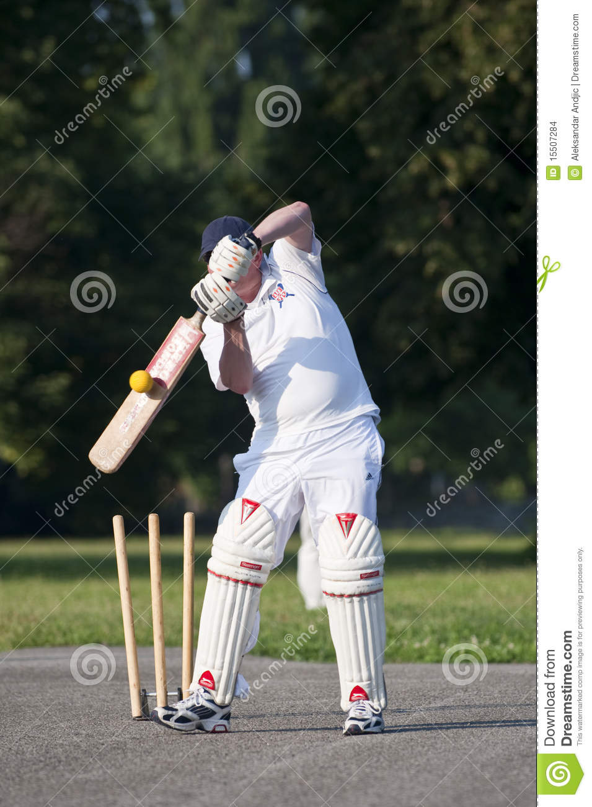

Sport L'Eco di Bergamo - Notizie di Bergamo e provincia
- Home - CUS Catania
Da Taurus Sport puoi trovare le ultime collezioni delle migliori marche di abbigliamento sportivo e attrezzature sportive professionali. Taurus Sport è a Lecco, Erba e Carate Brianza - Scarpe, abbigliamento e attrezzature sportive - Tecnica Sport
ENCI Sport è il sito ufficiale per gli sport dell'ENCI - Ente Nazionale Cinofilia Italiana. Agility dog e obedience. Calendario gare, ultimi risultati e aggiornamenti. - Sky Sport - Wikipedia
CUS Catania è il Centro Universitario Sportivo dell'Ateneo catanese. È stato fondato l'8 luglio 1947. Il gruppo sportivo universitario etneo - Negozio di sport a Torino: abbigliamento, scarpe ...
Anche se l'accezione comune del termine solitamente individua quali sport acquatici solo quelli praticati in piscina (nuoto, nuoto di fondo, nuoto sincronizzato, tuffi, tuffi dalle grandi altezze, pallanuoto e masters, cioè quelli governati dalla FINA), vanno a tutti gli effetti considerati tali anche gli sport remieri (canottaggio, canoa/kayak e canoa fluviale, Dragonboat, Rafting) e quelli ... - Diretta Radio Sport
Centro Sport Palladio Via Cavalieri di Vittorio Veneto, 29 36100 Vicenza VI Tel: 0444-963466 info@centrosportpalladio.it; Contattaci. Accetto il trattamento della privacy (leggi l'informativa) Invia Richiesta × Iscriviti alla newsletter. Centro Sport Palladio ... - HOME | SPORTITALIA
Alle ore 19.00 di lunedì 12 aprile si gioca la partita Chievo-Pisa, gara valevole per … Read More » - Cus Firenze
JOLLY SPORT s.r.l. P. IVA: 06282750014. Via Nizza 51/53, 10125 Torino (TO) Tel: 011 6507553. Fax: 011 6508036. Email: servizio-clienti@jollysport.it - 2T Sport srl | Abbigliamento Sportivo Personalizzato e su ...
Sport Atalanta Foppapedretti Notizie di Bergamo e approfondimenti di cronaca, politica, economia e sport. News Bergamo e provincia in tempo reale. - Sito ufficiale | ENCI Sport
Sport.it è il sito che racconta in diretta i principali eventi sportivi e che raccoglie consigli su prodotti e abbonamenti per chi ama lo sport. Al fine di fornire ai suoi lettori spunti di riflessione utili al loro shopping online sono pubblicati articoli dedicati ai principali sport. - Assindustria Sport | Società Sportiva dilettantistica a ...
SNAPS - OLTRE LO SPORT Hai perso la puntata di SNAPS - OLTRE LO SPORT? Nessun problema, riguarda la puntata integrale nella nostra sezione on demand

Edizione Digitale Abbonamenti Necrologie Concorsi Skill Alexa Redazione Edizione Digitale | Abbonamenti | Necrologie | Corner | Skille | Eppen Bonus Casa Edizione Digitale Abbonamenti Necrologie Concorsi Skill Alexa Redazione Edizione Digitale | Abbonamenti | Necrologie | Il Gustavo 2020 Menu Cronaca Economia Cultura e spettacoli Sport Eventi Video CERCA Seleziona un territorio Chiudi i territori Città Hinterland Bassa Val Calepio e Sebino Isola e Val San Martino Val Brembana e Val Imagna Val Seriana e Val di Scalve Val Cavallina Menu Cronaca Economia Cultura e spettacoli Sport Eventi Video CERCA Seleziona un territorio Chiudi i territori Città Hinterland Bassa Val Calepio e Sebino Isola e Val San Martino Val Brembana e Val Imagna Val Seriana e Val di Scalve Val Cavallina Sport 12/04/2021 | Match Analysis
Fiorentina-Atalanta, match analysis. I due moduli di Gasp, dati da dominio e il pelo nell’uovo: i rischi del calo d’intensità
La sfida tra Fiorentina ed Atalanta ha chiuso la trentesima giornata di Serie A. Tra sabato e domenica, tutte le pretendenti ai piazzamenti Champions avevano vinto le rispettive gare, ed avevano così messo pressione alla squadra di Gasperini. La formazione …Fiorentina-Atalanta, match analysis. I due moduli di Gasp, dati da dominio e il pelo nell’uovo: i rischi del calo d’intensità
La sfida tra Fiorentina ed Atalanta ha chiuso la trentesima giornata di Serie A. Tra sabato e domenica, tutte le pretendenti ai piazzamenti Champions avevano vinto le rispettive gare, ed avevano così messo pressione alla squadra di Gasperini. La formazione …
Corner - Match Analysis 0L’Atalanta e il fantasma di Bologna (e Torino): domina, spreca, subisce. Ma stavolta vince e si riprende il suo posto
Si doveva vincere, e s’è vinto. Però ragazzi, se dobbiamo arrivare a fine maggio soffrendo così ogni volta, non saranno partite: saranno scalate dell’Everest … 11/04/2021 Corner - Editoriali 0Gasperini: «Tre passi fondamentali, ma la classifica è immutata»
Il commento dell’allenatore dei nerazzurri alla fine della gara con i Viola finita con una vittoria per 3-2. 11/04/2021 Sport Atalanta, Ilicic ricaricato a Firenze.
Sale già la febbre per la sfida-Juve
In ventinove minuti sul campo di Firenze ha procurato il rigore trasformandolo (quello del vincente 3-2) e con un paio di lampi, nel finale, … 12/04/2021 Sport Atalanta-Fiorentina succede di tutto, ma l’obiettivo è raggiunto: 3-2 ai Viola
Trentesima giornata di campionato. Una partita dai mille volti. Doppietta di Zapata e gol decisivo di Ilicic su rigore. 11/04/2021 Corner - A Tutto CampoLe chat vocali di Corner passano da Clubhouse al canale Telegram (così tutti possono partecipare)
Piccola novità per le chat vocali di L’Eco e Corner, che cambiano piattaforma. Dopo qualche mese di sperimentazione su Clubhouse, la redazione ha deciso … 11/04/2021 Corner - A Tutto Campo 0Basket A2, exploit della Withu col Torino a Bergamo, la speranza salvezza rimane
Vittoria meritata al fotofinish della Withu contro l’ambiziosa Torino al PalaAgnelli (71-67). 11/04/2021 SportFiorentina-Atalanta, preview tattica. La «Viola», buoni solisti ma gruppo mal costruito. Ecco come giocano
Dopo le improvvise dimissioni di Cesare Prandelli, la guida tecnica della Fiorentina è tornata tra le mani di Giuseppe Iachini. Il tecnico originario di … 11/04/2021 Corner - Match Analysis 0Gasperini, Vlahovic merito di Prandelli: «Un abbraccio a Cesare, lo stimiamo in tanti»
Alla vigilia del match di Firenze, l’allenatore dell’Atalanta Gian Piero Gasperini fa i complimenti all’avversario mancato, dimessosi dalla panchina viola. 10/04/2021 SportAtalanta, la Fiorentina ha trovato l’America. Storia di Commisso e dei patron made in Usa (e perché fanno flop)
Sono arrivati gli americani! No, non è il titolo di un film ambientato sul finire del secondo conflitto mondiale, ma la sintesi dell’attuale situazione … 10/04/2021 Corner - Calcio&Business 0 1-12 di 10000 elementi totali 1 2 3 4 5 6 7 8 9 Successivo Dorsale Orobica Lecchese Aree Bergamo città Hinterland Bassa Bergamasca Isola Valle Brembana Valle Seriana Valle Imagna Valle di Scalve Valle Cavallina Val Calepio e Sebino Sezioni Cronaca Economia Cultura e spettacoli Sport Eventi Video Rubriche Eco.Bergamo La salute Ricette (quasi) perfette Viaggi e turismo Motori Moda e tendenze Amici con la coda Il piacere di leggere L'Eco della vita Redazione Redazione Scriveteci Registrati Il Network Chi Cerca Casa Orobie Ark Corner Moovin BonusCasa L'Eco della Vita Kendoo Case in Festa StoryLab Radio Alta BergamoTV L'Eco Cafè Meeteco Edoomark Skille Noi Comune Eppen Servizi Necrologie Abbonamenti Pubblicità Privacy & Cookie Policy Concorsi Archivio © COPYRIGHT 2020 - S.E.S.A.A.B. S.p.a. con sede in Viale Papa Giovanni XXIII, 118 24121 Bergamo - E' vietata la riproduzione anche parzialeIscritta al Registro Imprese di Bergamo al n.243762 | Capitale sociale Euro 10.000.000 i.v.
